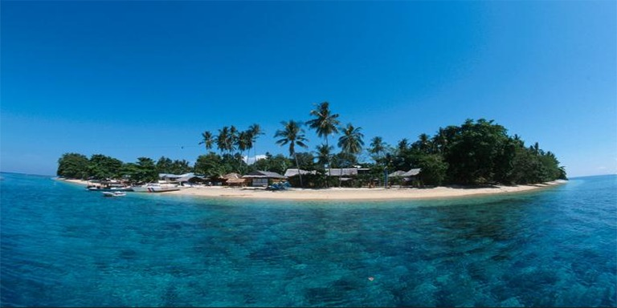

Taman Nasional Bunaken adalah taman laut yang terletak di Sulawesi Utara, Indonesia. Taman ini terletak di Segitiga Terumbu Karang, menjadi habitat bagi 390 spesies terumbu karang dan juga berbagai spesies ikan, moluska, reptil dan mamalia laut. Taman Nasional Bunaken merupakan perwakilan ekosistem laut Indonesia, meliputi padang rumput laut, terumbu karang dan ekosistem pantai.
Taman nasional ini didirikan pada tahun 1991 dan meliputi wilayah seluas 890.65 km². 97% dari taman nasional ini merupakan habitat laut, sementara 3% sisanya merupakan daratan, meliputi lima pulau: Bunaken, Manado Tua, Mantehage, Naen dan Siladen.

Lokasi Pulau Bunaken :